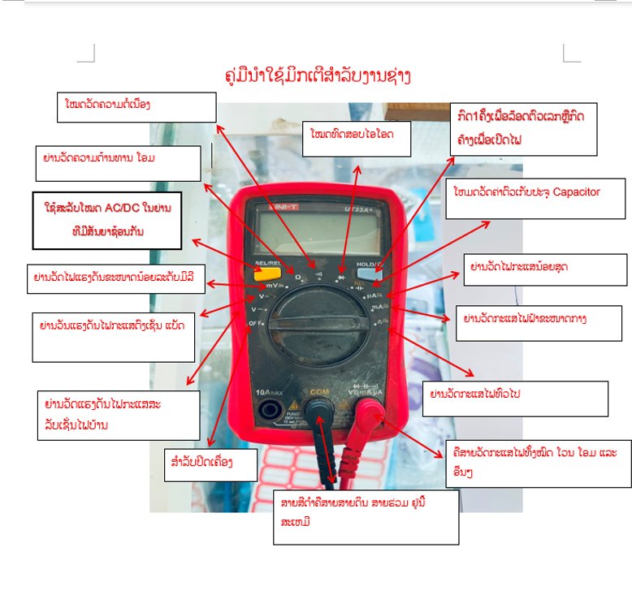
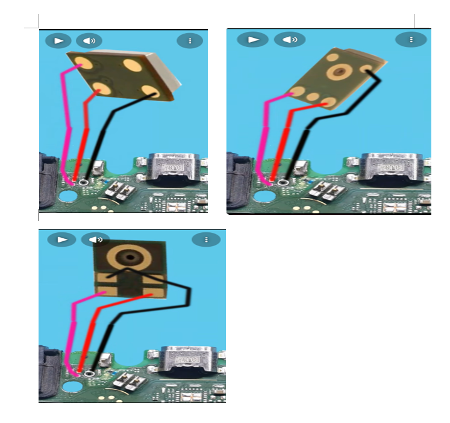
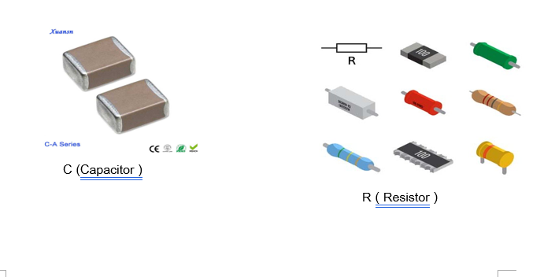
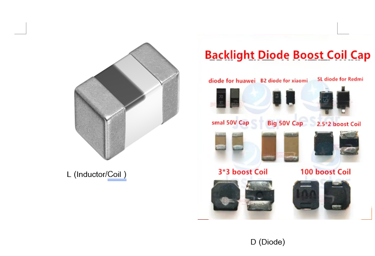
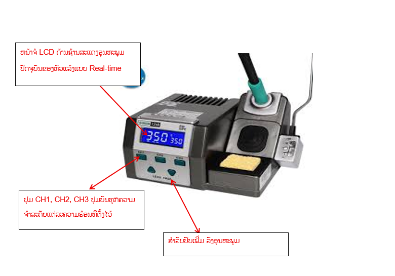
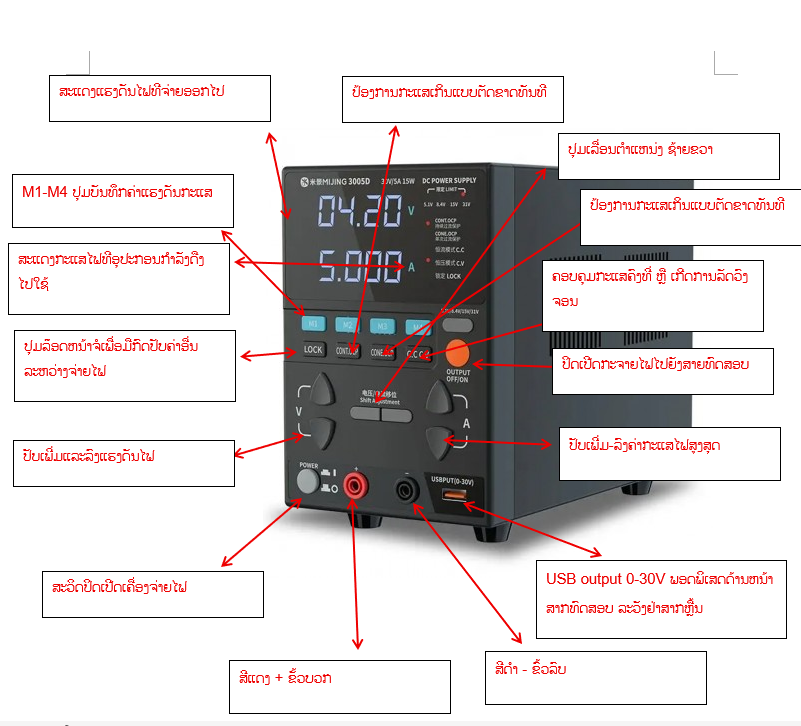
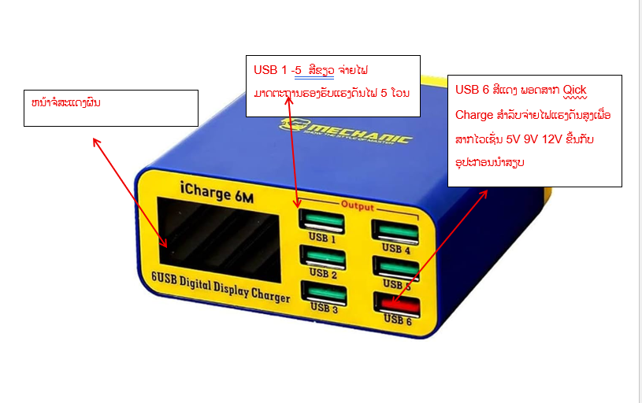
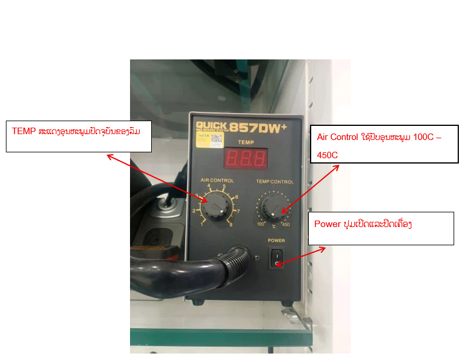

ຄູ່ມືການສ້ອມແປງໂທລະສັບ

ມິດເຕີນີ້ຊື່ວ່າ UNI-T UT33A+
ສອນວັດຄ່າ Diode ວ່າມີໄຟລ້ຽງບໍ
-ສາຍແດງ ຈິ້ມກາວ
-ສາຍດຳ ຈິ້ມວັດຕາມຂາ ຄ່າເປັນຕົວເລກ 0.300V – 0.700V ສະແດງວ່າປົກກະຕິ ຄ່າຂື້ນ 0L ສະແດງວ່າລາຍນັ້ນຂາດ ວັດຄ່າໄດ້ 0.0000 ຫຼື ໃກ້ຄຽງສະແດງວ່າລາຍນັ້ນຊ໊ອດຫຼືຂາດ

ຂັ້ນຕອນການຕໍ່ລາຍໄມໂທລະສັບ


2. C ( Capacitor ) ຕົວເກັບບັນຈຸ ຄ່າໃນໂທລະສັບ ມັກເປັນ μF ໄມໂນຟາ ແລະ nF ນາໂນຟາ ວິທີວັດຫາສຽງ ຍອດນິຍົມ ແລະ ວັດໃນບອດ: ເປີດໄປຍ່ານ Diode Mode ຫຼືຍ່ານສຽງ ຈີ້ມສາຍດຳລົງກາວ ແລ້ວເອົາສາຍແດງຈີ້ມທີຫົວ ທ້າຍຂອງຕົວ C ທີລະຝັ່ງ ຄ່າປົກກະຕິ ຝັ່ງຫນື່ງຕ້ອງດັງ ຕິກ ຫຼື ຂື້ນຄ່າຕ່ຳຫຼາຍເພາະຝັ່ງນັ້ນຕໍ່ລົງກາວ ສ່ວນອີກຝັ່ງໜື່ງຕ້ອງບໍ່ດັງແລະມີຄ່າແຮງດັນຕົວເລກຕົກຄາວຄາວ 0.300V – 0.600V ຄ່າທີເສຍ ຊ໊ອດ: ຈິ້ມແລ້ວມິກເຕີດັງດັງ ຕິກ ຍາວຍາວຫຼືຂື້ນຄ່າ 0.000V ທັ້ງສອງຝັ່ງ ສະແດງວ່າ C ຕົວນັ້ນທະລຸຊ໊ອດລົງກາວ ເຮັດໃຫ້ລະບົບໄຟເສັ້ນນັ້ນເສຍຫາຍ ເຄື່ອງຈະເປີດບໍ່ຕິດ ຫຼື ກິນກະແສໄຟສູງ ວິທີວັດຄ່າຄວາມຈຸ ຕ້ອງຖອດອອກມາວັດນອກບອດ ຕັ້ງມິກເຕີໄປທີຍ່ານວັດຄວາມຈຸ Capacitance ວັດຫົວທ້າຍ ຄ່າທີໄດ້ຕ້ອງຕົງຫຼືໃກ້ຄຽງກັບທີລະບຸໄວ້ໃນວົງຈອນ ຖ້າຂຶ້ນ 0 ຫຼືວັດບໍ່ໄດ້ແປວ່າ C ເສື່ອມຫຼືແຫ້ງ
2. R (Resistor) ຕົວຕ້ານທານ ຫນ່ວຍວັດໂອມ Ω ກິໂລໂອມ MΩ MΩ ເມກາໂອມ ວິທີຕັ້ງຄ່າ: ເປິດໄປຍ່ານ Ω ວັດຄ່ອມທີຫົວແລະທ້າຍຂອງຕົວ R ຖ້າໃຫ້ມັ່ນໃຈຄວນຍົກອອກມາວັດນອກບອດເພື່ອບໍ່ໃຫ້ຕົວອື່ນດືງອອກໄປ ຄ່າປົກກະຕິ: ຕ້ອງຕົງກັບລາຍວົງຈອນເຊັ່ນ 2.2 ກີໂອໂອມ ຫຼືວ່າ ວັດໄດ້ 2.18 ກີໂລໂອມ ຖືວ່າປົກກະຕິ ຄ່າທີເສຍຫາຍ: ວັດແລ້ວມິກເຕີຂື້ນ 0L ແປວ່າຂາດໄຟເລ່ນຜ່ານບໍ່ໄດ້ ຫຼືຖ້າວົງຈອນບອກວ່າ 10 ກິໂລວັດ ແຕ່ວັດໄດ້ 50 ກີໂລວັດ ແປວ່າຢືດຄ່າກະແສໄຟ
3. L (Inductor/Coil) ໜ່ວຍວັດເປັນເຮນລີ່ ມີລີ່ເຮນລີ່ ແລະ ໄມໂຄເຮນລີ່ ຕັ້ງມິກເຕີໄປທີ່ຍ່ານສຽງ ຫຼື ຍ່ານໂອມຕ່ຳຕ່ຳ ວັດຄ່າຫົວແລະທ້າຍຂອງຕົວ L ຄ່າປົກກະຕິ:ວັດສຽງດັງຕິກ ຫຼືໄດ້ຄ່າຕໍ່ຳ ໃກ້ຄຽງ 0 ໂອມສະແດງວ່າກະແສໄຟເລ່ນຜ່ານໄດ້ສະດວກ ຄ່າທີເສຍ: ວັດແລ້ວຫງຽບແລະມິກເຕີຂື້ນ 0L ແປວ່າຂາດ ໄຟສົ່ງໄປບໍ່ເຖີງ ມັກເກີດໃນໄຟຫນ້າຈໍ ຫຼື ລະບົບໄຟລ້ຽງ CPU ເຮັດໃຫ້ເຄື່ອງເປີດບໍ່ຕິດ
4. D (Diode) ຄອບຄຸມໃຫ້ກະແສໄຟໄຫລໄປໃນທິດທາງດຽວກັນ
ຫນ່ວຍວັດ: ແຮງດັນຕົກຄ່ອນ ມີຫນ່ວຍເປັນ V ຫລືວ່າ ມິລີໂວນ
ເປິດຍ່ານໄປທີ Diode Mode ມີຄຸນສົມບັດຍອມໃຫ້ໄຟເລ່ນຜ່ານໄດ້ທາງດຽວ ຕ້ອງວັດ 2 ຄັ້ງໂດຍການສະລັບສາຍມິກເຕີ
ຄັ້້ງທີ 1: ສາຍແດງຈິ້ມຝັ່ງ Anode (+) ສາຍດຳຈິ້ມຝັ່ງ Cathode (-) ຄ່າປົກກະຕິ 0.2 ຫາ 0.7 ໂວນ ຫຼືວ່າ 200
ຫາ 700 ມິລີິໂວນ
ຄັ້ງທີ 2: ສະລັບຝັ່ງກັນຈິ້ມ ມີຄ່າປະມານ 0L ໄຟບໍ່ຜ່ານ ແບບນີ້ຄືໄດໂອດເຮັດວຽກປົກກະຕິ
ຄ່າເສຍ
ຊ໊ອດທະລຸ ວັດທັ້ງສອງຝັ່ງແລ້ວຂື້ນ 0.000 V ຫຼືມິກເຕີດັງຕິກ ທັ້ງສອງຝັ່ງ ກະແສໄຟໄຫລຍ້ອນກັບໄດ້
ຂາດ: ວັດທັ້ງສອງຝັ່ງແລ້ວຂື້ນ 0L ທັ້ງຄູ່ ກະແສໄຟເລ່ນຜ່ານບໍ່ໄດ້
• C ຊ໊ອດຫລາຍທີສຸດ ວັດໃນບອດຮ້ອງ ຕິກ ລົງກາວທັງສອງຝັ່ງ ເທົ່າກັບ ເສີຍ
• R ມັກຂາດ ແລະ ຍືດຂາດ ວັດຄ່າໂອມເກິນໃນວົງຈອນ ຫຼືວ່າຂື້ນ 0L = ເສຍ
• L ມັກຂາດ ວັດແລ້ວດັງຕິກ ຖ້າຫງຽບຫຼືຂື້ນ 0L = ເສຍ
• D ຊອບຊ໊ອດຫຼືຂາດ ວັດສະລັບສາຍ ຕ້ອງຂື້ນຄ່າຍົກຝັ່ງໜື່ງ ແລະ ຂື້ນ 0L = ດີ
ຊິບເຊັດປະມວນຜົນ ແລະ ຫນ່ວຍຄວາມຈຳ
- CPU ( Central Processing Unit) ສະໝອງກົນຫຼັກຂອງເຄື່ອງ ເຮັດຫນ້າທີ່ປະມວນຜົນທຸກຢ່າງ
- NAND Flash (Memory) ຫນ່ວຍຄວາມຈຳຫຼັກຂອງເຄື່ອງທີເກັບຂໍ້ມູມລະບົບປະຕິບັດການ ແລະ ຂໍ້ມູມຜູ້ໃຊ້ງານ ຖ້າຊີບນີ້ເສີຍເຄື່ອງຈະເປິດຕິດແລະຄ້າງໂລໂກ ຫຼື ເອີເລີ
- RAM ຫນ່ວຍຄວາມຈຳຊົ່ວຄາວທີເຮັດວຽກພ້ອມກັບ CPU
Smartphone Logic Board
1. ລະດັບພື້ນຖານ: ການແກ້ເຄື່ອງແບບຖືກວິທີ ຄວາມປອດໄພ ແລະ ການໃຊ້ເຄື່ອງມືວັດຄ່າພື້ນຖານ
2. ລະດັບກາງ: ການອ່ານວົງຈອນ Borneo Schematic ການໃຊ້ໂປຣແກມຊ່ວຍແປງ
3. ລະດັບສູງຫຼືມືອາຊີບ: ເນັ້ນແປງບອດ ການວິເຄາະໄຟ ໄລ່ວົງຈອນເປິດບໍ່ຕິດ ສາກບໍ່ເຂົ້າ ງານແປງລາຍວົງຈອນຂາດ
ອຸປະກອນອີເລັກໂທຣນິກພື້ນຖານ
C (Capacitor ) ຕົວເກັບບັນຈຸ ເຮັດຫນ້າທີ່ຮອງໄຟໃຫ້ຮຽບແລະສຳຣອງໄຟ ຕົວບັນຫາຫຼັກທີມັກຈະຊ໊ອດລົງກາວ
R ( Resistor ) ຕົວຕ້ານທານ: ຈຳກັດການໄຫລຂອງກະແສໄຟຟ້າແລະແບ່ງແຮງດັນຂອງກະແສໄຟຟ້າ
L (Inductor/Coil) ຂົດລວດ ກອງສັນຍາ ແລະ ເຮັດວຽກຮ່ວມກັບຊິບຈັດການພະລັງງານເພື່ອບູດແຮງດັນໄຟ
D (Diode) ຄອບຄຸມໃຫ້ກະແສໄຟໄຫລໄປໃນທິດທາງດຽວກັນ ມັກໃຊ້ໃນໄຟຫນ້າຈໍ ແລະ ລະບົບປ້ອງກັນໄຟຕົກ

ສ່ວນປະກອບ
- ຕົວເຄື່ອງຄອບຄຸມ ເຮັດຫນ້າທີ່ແປງແຮງດັນໄຟແລະຄອບຄຸມອຸມຫະພຸມຜ່ານວົງຈອນ ມີຫນ້າຈໍ LCD ບອກອຸນຫະພູມຊັດເຈນ
- ດ້າມຫົວແລ້ງ ຈັບອອກຄວາມຮ້ອນຈະເລີ່ມທຳງານທັນທີ ປາຍດ້ານຫົວແລ້ງແບບຖອດສາມາດປ່ຽນໄສ້ໄດ້
- ແທ່ງວາງຫົວແລ້ງ ເປັນທີສຳລັບວາງຫົວແລ້ງທີກຳລັງຮ້ອນ ເພື່ອຄວາມປອດໄພແລະຊ່ອງວາງຝອງນ້ຳທົນຄວາມຮ້ອນ
ຂັ້ນຕອນການໃຊ້ງານ:
- ງານແປງຊີບນ້ອຍນ້ອຍແນະນຳອຸນຫະພຸມ 320 ຫາ 350
- ງານແປງຊີບນ້ອຍນ້ອຍແນະນຳອຸນຫະພຸມ 320 ຫາ 350
- ງານແຍກຂົ້ວແບັດ ແນະນຳອຸນຫະພຸມ 390 ຫາ 400 ບໍ່ຄວນຄ/ຕັ້ງເກິນ 400 ເພາະຈະເຮັດໃຫ້ຫົວແລ້ງຮ້ອນແລະເສຍໄວ


ຂໍ້ຄວນລະວັງ :
- ຫຼີກລ່ຽງການໃຊ້ຮູສາກຈົນເຕັມເມດແລະສາກໄລຍະຍາວເກິນກຳລັງວັດລວມຂອງເຄື່ອງ ເພາະຈະເຮັດໃຫ້ເຄື່ອງຮ້ອນເກິນໄປ
- ຫ້າມໃຫ້ອຸປະກອນຖືກນ້ຳ ຫຼື ໃຊ້ໃນງານທີມີຄວາມຊຸ່ມສູງ
- ຫາກສາກທົດລອງປະເພດບອດທົດລອງ ແລ້ວຄ່າ A ຂຶ້ນສູງຜິດປົກກະຕິ ຄວນຖອດອອກທັນທີິ ເພາະອາດເກີດໄຟລັດວົງຈອນ

ຂໍ້ຄວນລະວັງ
1. ຫ້າມປິດສະວິດທັນທີຫລັງຈາກເປົ່າສຳເລັດ ຄວນວາງເຄື່ອງເປົ່າລົມຮ້ອນກ່ອນແລ້ວຄ່ອຍປິດສະວິດ
2. ລະວັງຢ່າໃຫ້ເຄື່ອງຄວາມຮ້ອນຖືກມື ຫຼືວ່າ ສາຍໄຟເດັດຂາດ
ການປັບອຸນຫະພຸມໃຫ້ເຫມາະສົມ
- ເປົ້າແຫ້ງ 100 ຫາ 200 ລະດັບລົມ 4ຫາ 5
- ຍົກແລະວາງອຸປະກອນຕົວນ້ອຍ 300 ຫາ 350 ລະດັບລົມ 2 ຫາ 3 ລົມເບົາປ້ອງປິວ
- ຍົກວາງກົ້ນສາກ 350 ຫາ 380 ລະດັບລົມຮ້ອນ 4 ຫາ 5
- ຍົກໄອຊີຕົວໃຫຍ່ 360 ຫາ 400 ລະດັບລົມຮ້ອນ 4,5 ຫາ 6